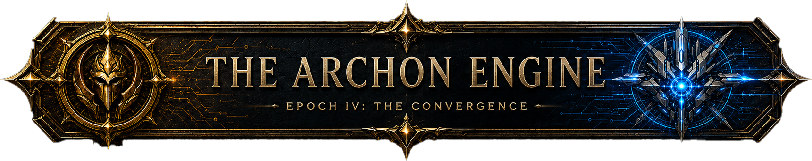
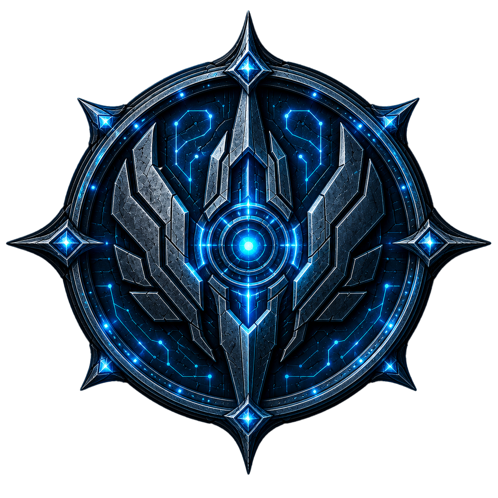

Current Era
Rival ideologies press across the relay board.

Arena Lock
Pilot the Remnant fighter and hold the square.
Ethical Codex
Access the Ethical Codex. Draw 3 tiles, choose 1, discard 2.

Ethical Cluster